Conception et déploiement complet du système d'information d'une ESN de 15 collaborateurs, de zéro à la mise en production — PEP Mission 1, RNCP39781.
NTIC CENTER CORPORATION (NCC) est une ESN de 15 collaborateurs établie au 52 rue Charles Michels, 93200 Saint-Denis, spécialisée en cybersécurité, cloud computing, infogérance et formation IT.
Au lancement de la mission, NCC ne disposait d'aucune infrastructure réseau structurée : équipements dispersés, accès non centralisés, aucun système de supervision ni de journalisation. Face à l'accueil croissant de stagiaires et à l'expansion de ses activités, la direction a mandaté le déploiement complet d'un SI sécurisé et pédagogique.
| # | Besoin | Solution retenue | Statut |
|---|---|---|---|
| 1 | Authentification centralisée | Active Directory ncc.local (DC01 + DC02 HA, Kerberos) | ✓ Déployé |
| 2 | VPN sécurisé accès distant | OpenVPN AES-256-GCM, PKI NCC-VPN-CA | ✓ Déployé |
| 3 | Journalisation & conformité RGPD | SIEM Wazuh 4.7 — 7 agents, IDS, FIM | ✓ Déployé |
L'infrastructure repose sur un modèle entièrement on-premise virtualisé sous VMware Workstation Pro, hébergé sur un poste physique de 16 Go RAM / 8 cœurs. 10 VMs ont été déployées sur 5 réseaux VMnet distincts (host-only) + 1 VMnet bridgé (WAN).
| VM | vCPU | RAM | Disque | OS | VLAN | Rôle principal |
|---|---|---|---|---|---|---|
| PFW-PARIS-01 | 2 | 1 Go | 20 Go | pfSense 2.7 CE | ALL | Pare-feu, routage inter-VLAN, VPN, NAT |
| AD-DC01 | 2 | 4 Go | 60 Go | Windows Server 2022 | ADMIN | AD DS PDC, DNS autoritaire, DHCP principal |
| AD-DC02 | 2 | 4 Go | 60 Go | Windows Server 2022 | SERVERS | AD DS secondaire, DNS, DHCP failover HA |
| FS-SRV | 2 | 2 Go | 60 Go | Windows Server 2022 | SERVERS | Serveur de fichiers SMB, DFS Namespace |
| ERP-SRV | 2 | 2 Go | 40 Go | Ubuntu 22.04 LTS | SERVERS | Application métier Tomcat 10 + PostgreSQL 14 |
| ZBX-SRV | 2 | 2 Go | 40 Go | Ubuntu 22.04 LTS | SERVERS | Zabbix 6.4 — supervision monitoring |
| WZH-MGR | 2 | 4 Go | 50 Go | Ubuntu 22.04 LTS | SERVERS | Wazuh 4.7 SIEM — Indexer + Manager + Dashboard |
| WEB-FRONT | 1 | 1 Go | 20 Go | Ubuntu 22.04 LTS | DMZ | Nginx Reverse Proxy, terminaison TLS |
| BASTION-SRV | 1 | 1 Go | 20 Go | Ubuntu 22.04 LTS | DMZ | Bastion SSH centralisé, Fail2ban |
| CLIENT-01 | 2 | 2 Go | 40 Go | Windows 10/11 Pro | USERS | Poste utilisateur joint ncc.local, validation GPO |
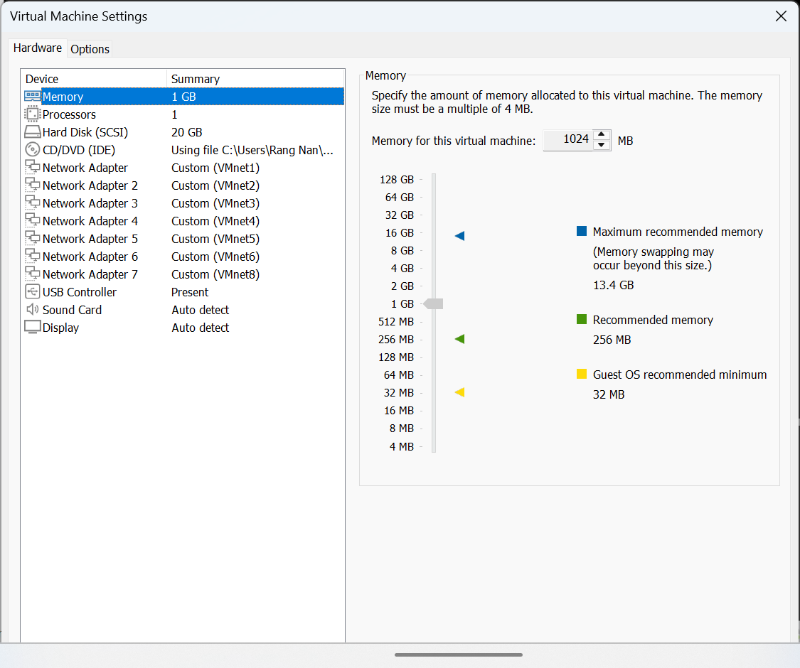
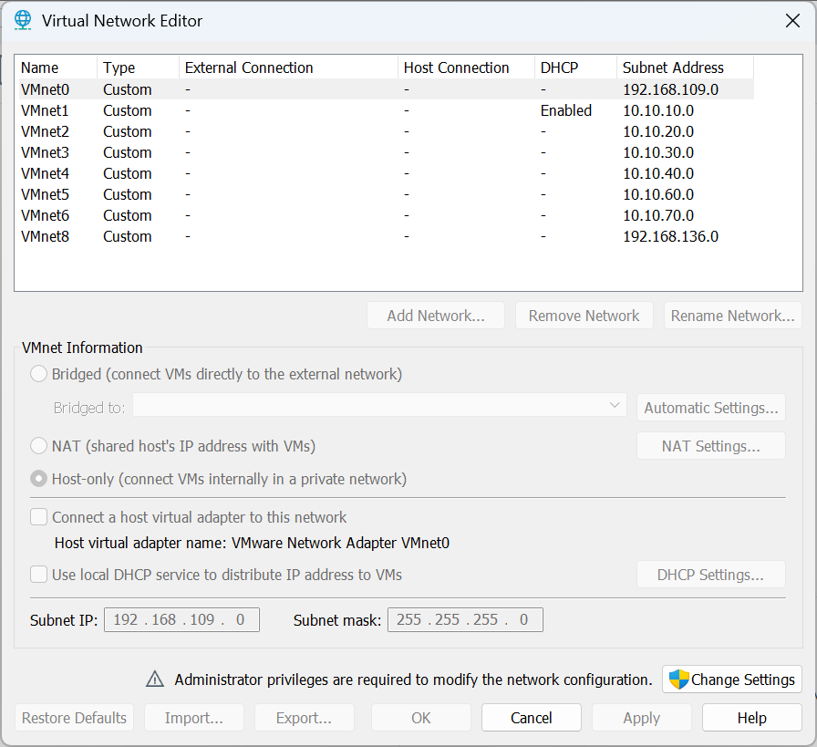
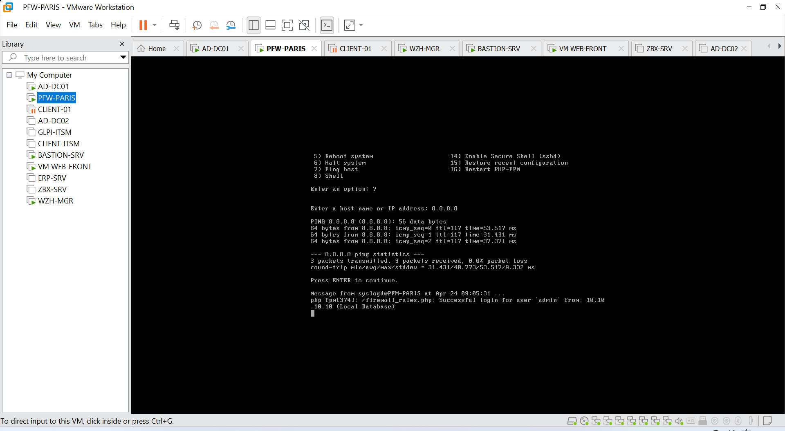
| Zone | Réseau | Passerelle | Composants principaux | Niveau de confiance |
|---|---|---|---|---|
| VLAN 10 – ADMIN | 10.10.10.0/24 | 10.10.10.1 | AD-DC01 (10.10.10.10), postes admins | Critique |
| VLAN 20 – SERVERS | 10.10.20.0/24 | 10.10.20.1 | AD-DC02, FS-SRV, ERP-SRV, ZBX-SRV, WZH-MGR | Haute |
| VLAN 30 – DMZ | 10.10.30.0/24 | 10.10.30.1 | WEB-FRONT (10.10.30.10), BASTION-SRV (10.10.30.20) | Moyenne |
| VLAN 40 – USERS | 10.10.40.0/24 | 10.10.40.1 | 15 postes collaborateurs (DHCP 10.10.40.100-200) | Normale |
| VLAN 70 – BACKUP | 10.10.70.0/24 | 10.10.70.1 | NAS Synology RAID6 (10.10.70.10) | Haute |
| Couche | Mesure de sécurité | Outil / Technologie |
|---|---|---|
| 1 — Périmétrique | Pare-feu à état, règles inter-VLAN granulaires, DMZ isolée | pfSense 2.7 CE (PFW-PARIS-01) |
| 1 — Périmétrique | VPN chiffré AES-256-GCM pour accès distants | OpenVPN — PKI NCC-VPN-CA (RSA 2048) |
| 2 — Identités | Authentification centralisée Kerberos, moindre privilège | Active Directory ncc.local — GPO |
| 2 — Identités | Bastion SSH — point d'entrée unique et journalisé | BASTION-SRV (10.10.30.20) |
| 3 — Endpoints | Pare-feu local, anti-bruteforce SSH (ban 5 échecs / 1h) | UFW + Fail2ban |
| 4 — Supervision | Monitoring temps réel, alertes CPU/disque/service | Zabbix 6.4 — 7 agents |
| 4 — Supervision | SIEM, IDS, FIM (/etc/passwd, shadow, sudoers), audit SSH/RDP | Wazuh 4.7 — 7 agents |
| 5 — Continuité | Sauvegardes locales RAID6 — RTO 2h / RPO 24h | NAS Synology — VLAN 70 |
Activité la plus structurante du projet : tous les autres composants dépendent de pfSense. J'ai créé 6 VMnets dans VMware avant de déployer PFW-PARIS-01 avec 6 interfaces réseau.
# 6 VMnets créés — 5 host-only + 1 bridgé
VMnet1 → Host-only → 10.10.10.0/24 # VLAN 10 ADMIN
VMnet2 → Host-only → 10.10.20.0/24 # VLAN 20 SERVERS
VMnet3 → Host-only → 10.10.30.0/24 # VLAN 30 DMZ
VMnet4 → Host-only → 10.10.40.0/24 # VLAN 40 USERS
VMnet6 → Host-only → 10.10.70.0/24 # VLAN 70 BACKUP
VMnet8 → Bridged → carte physique # WAN pfSense# Interfaces sur PFW-PARIS-01 (2 vCPU / 1 Go RAM / 20 Go)
em0 → WAN → 10.99.95.30/DHCP # Opérateur Internet
em1 → ADMIN → 10.10.10.1/24
em2 → SERVERS → 10.10.20.1/24
em3 → DMZ → 10.10.30.1/24
em4 → USERS → 10.10.40.1/24
em5 → BACKUP → 10.10.70.1/24
# Renommer les interfaces OPT1→SERVERS, OPT2→DMZ, OPT3→USERS, OPT4→BACKUP
# pfSense > Interfaces > [OPTx] > Description# Interface USERS — règles autorisées
ALLOW USERS → SERVERS TCP 389,88,445 # LDAP, Kerberos, SMB
ALLOW USERS → DMZ TCP 80,443 # HTTP/HTTPS vers WEB-FRONT
ALLOW USERS → WAN ANY # Navigation Internet
DENY USERS → ADMIN ANY # Isolation VLAN Admin
DENY USERS → BACKUP ANY # Isolation sauvegardes
# DHCP Relay sur interface USERS → AD-DC01
Services > DHCP Relay > Enable > Server: 10.10.10.10
# Diagnostic WAN résolu (VMnet8 mauvaise carte physique)
# Problème : ping 8.8.8.8 timeout
# Fix : Edit > Virtual Network Editor > VMnet8 > sélectionner carte réseau active
# Validation : ping 8.8.8.8 → 0% perte ✓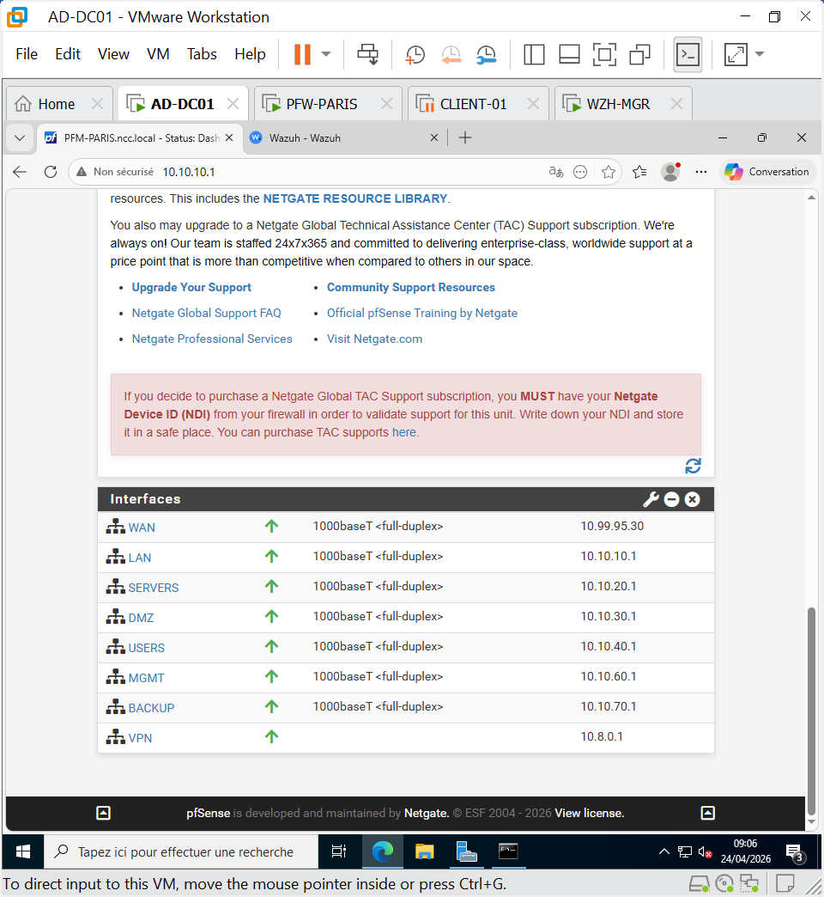
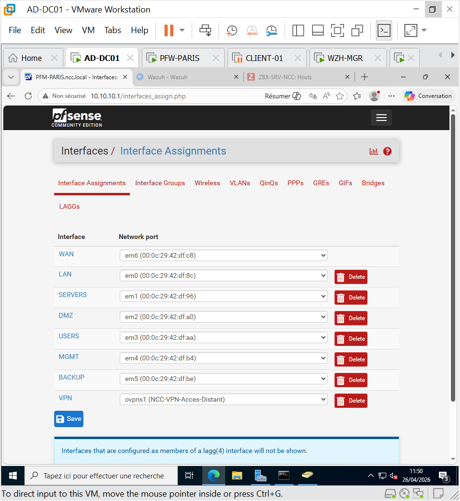
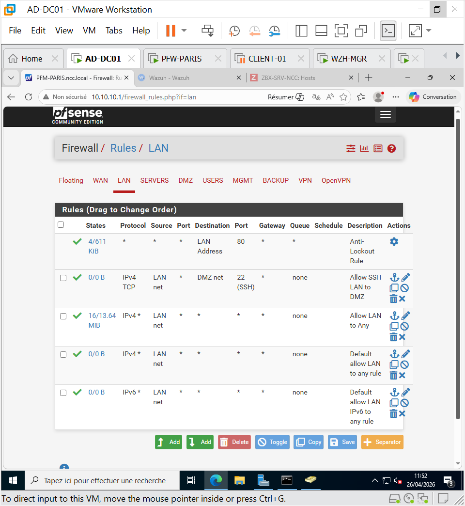
Premier besoin fondamental : sans annuaire, impossible de gérer les accès, GPO et ressources partagées. J'ai déployé une forêt AD en HA avec deux contrôleurs de domaine.
# Désactivation IPv6 (éviter conflits DNS)
Disable-NetAdapterBinding -Name "Ethernet0" -ComponentID ms_tcpip6
# IP statique
New-NetIPAddress -InterfaceAlias "Ethernet0" `
-IPAddress 10.10.10.10 -PrefixLength 24 -DefaultGateway 10.10.10.1
Set-DnsClientServerAddress -InterfaceAlias "Ethernet0" -ServerAddresses 127.0.0.1# Installation rôle AD DS
Install-WindowsFeature -Name AD-Domain-Services -IncludeManagementTools
# Création forêt ncc.local
Install-ADDSForest `
-DomainName "ncc.local" `
-DomainNetbiosName "NCC" `
-ForestMode "WinThreshold" `
-DomainMode "WinThreshold" `
-InstallDns:$true `
-SafeModeAdministratorPassword (ConvertTo-SecureString "P@ssw0rd!" -AsPlainText -Force) `
-Force:$true
# Redémarrage automatique après promotion
# Pool DHCP pour VLAN USERS
Add-DhcpServerv4Scope -Name "USERS-VLAN40" `
-StartRange 10.10.40.100 -EndRange 10.10.40.200 -SubnetMask 255.255.255.0
Set-DhcpServerv4OptionValue -ScopeId 10.10.40.0 `
-Router 10.10.40.1 -DnsServer 10.10.10.10 -DnsDomain ncc.local# Promotion en DC secondaire
Install-ADDSDomainController `
-DomainName "ncc.local" `
-Credential (Get-Credential NCC\Administrator) `
-InstallDns:$true `
-SafeModeAdministratorPassword (ConvertTo-SecureString "P@ssw0rd!" -AsPlainText -Force) `
-Force:$true
# Validation réplication inter-DC
dcdiag /test:replications
# → passed ✓
# DHCP Failover Hot Standby (bascule automatique 60s)
Add-DhcpServerv4Failover `
-Name "NCC-Failover" -PartnerServer "AD-DC02.ncc.local" `
-ScopeId 10.10.40.0 -Mode HotStandby `
-AutoStateTransition $true -MaxClientLeadTime 00:01:00# Création des 4 Unités d'Organisation principales
$b = "DC=ncc,DC=local"
New-ADOrganizationalUnit -Name "NCC-Paris" -Path $b
"Direction","Pole-Technique","Pole-Securite","Pole-Formation","Utilisateurs","Groupes","Ordinateurs","Serveurs" | ForEach-Object {
New-ADOrganizationalUnit -Name $_ -Path "OU=NCC-Paris,$b"
}
# 8 groupes de sécurité
"GRP-Direction","GRP-Technique","GRP-Securite","GRP-Formation","GRP-Informatique","GRP-Utilisateurs","GRP-Admins","GRP-Support" | ForEach-Object {
New-ADGroup -Name $_ -GroupScope Global -Path "OU=Groupes,OU=NCC-Paris,$b"
}
# Politique de mots de passe (8 car. min, expiration 90j, verrouillage 5 tentatives)
Set-ADDefaultDomainPasswordPolicy -Identity ncc.local `
-MinPasswordLength 8 -MaxPasswordAge 90.00:00:00 `
-LockoutThreshold 5 -LockoutObservationWindow 00:10:00
# GPO lecteurs réseau — via Group Policy Management Editor
# User Configuration > Windows Settings > Drive Maps
Z: → \\ncc.local\Partages\Utilisateurs$ (groupe GRP-Utilisateurs)
S: → \\ncc.local\Partages\Commun (tous utilisateurs du domaine)# Étape 1 — Configurer DNS vers AD-DC01 (OBLIGATOIRE avant jonction)
sudo nano /etc/systemd/resolved.conf
[Resolve]
DNS=10.10.10.10
Domains=ncc.local
sudo systemctl restart systemd-resolved
# Étape 2 — Installer les paquets requis
sudo apt install -y realmd sssd sssd-tools adcli packagekit
# Étape 3 — Découverte et jonction
sudo realm discover ncc.local
sudo realm join --user=Administrator ncc.local
# Étape 4 — Validation
realm list
id administrator@ncc.local
# → uid=xxxxx(administrator@ncc.local) ✓# Rôles File Server + DFS Namespace
Install-WindowsFeature -Name FS-FileServer,FS-DFS-Namespace,FS-DFS-Replication -IncludeManagementTools
# 4 partages SMB avec permissions NTFS par groupe AD
New-SmbShare -Name "Direction$" -Path "D:\Partages\Direction" -FullAccess "NCC\GRP-Direction"
New-SmbShare -Name "Informatique$" -Path "D:\Partages\Informatique" -FullAccess "NCC\GRP-Informatique"
New-SmbShare -Name "Utilisateurs$" -Path "D:\Partages\Utilisateurs" -FullAccess "NCC\GRP-Utilisateurs"
New-SmbShare -Name "Commun" -Path "D:\Partages\Commun" -ReadAccess "NCC\Utilisateurs du domaine"
# Namespace DFS \\ncc.local\Partages
New-DfsnRoot -TargetPath "\\FS-SRV\Partages" -Type DomainV2 -Path "\\ncc.local\Partages"
New-DfsnFolder -Path "\\ncc.local\Partages\Direction" -TargetPath "\\FS-SRV\Direction$"
New-DfsnFolder -Path "\\ncc.local\Partages\Informatique" -TargetPath "\\FS-SRV\Informatique$"
New-DfsnFolder -Path "\\ncc.local\Partages\Utilisateurs" -TargetPath "\\FS-SRV\Utilisateurs$"
New-DfsnFolder -Path "\\ncc.local\Partages\Commun" -TargetPath "\\FS-SRV\Commun"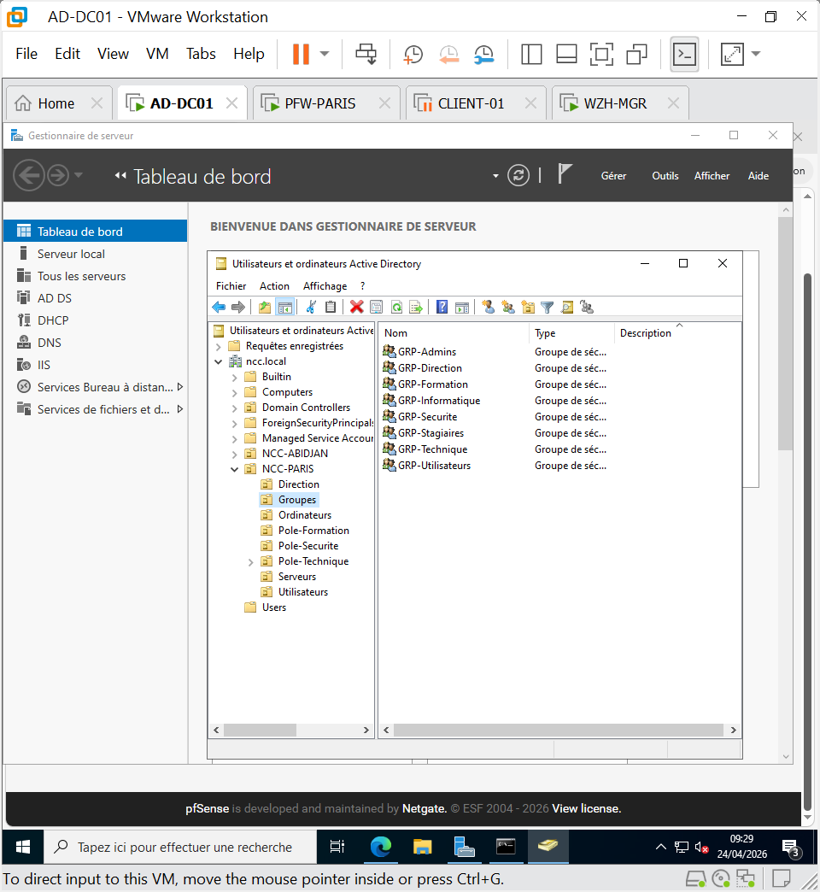
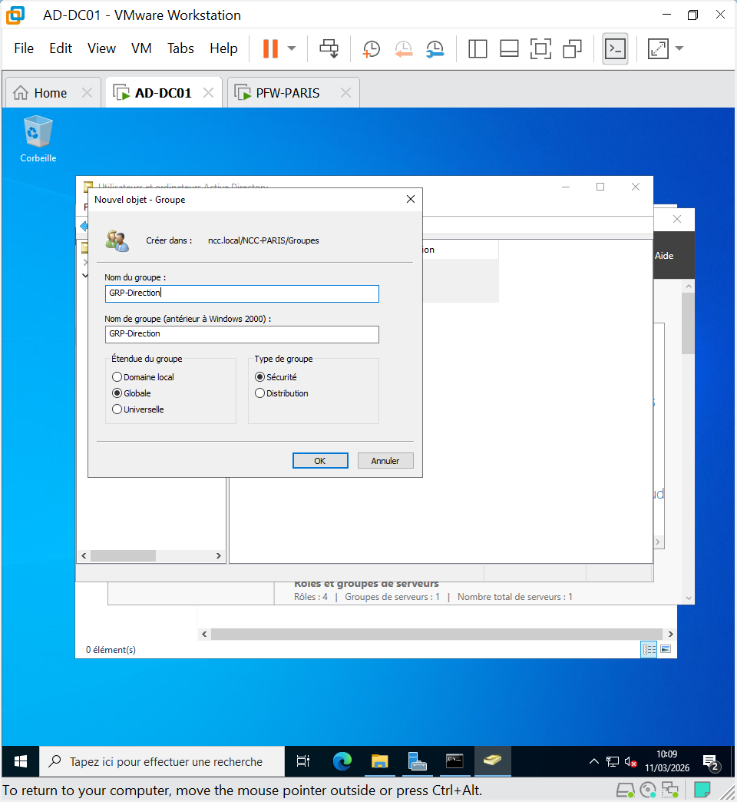
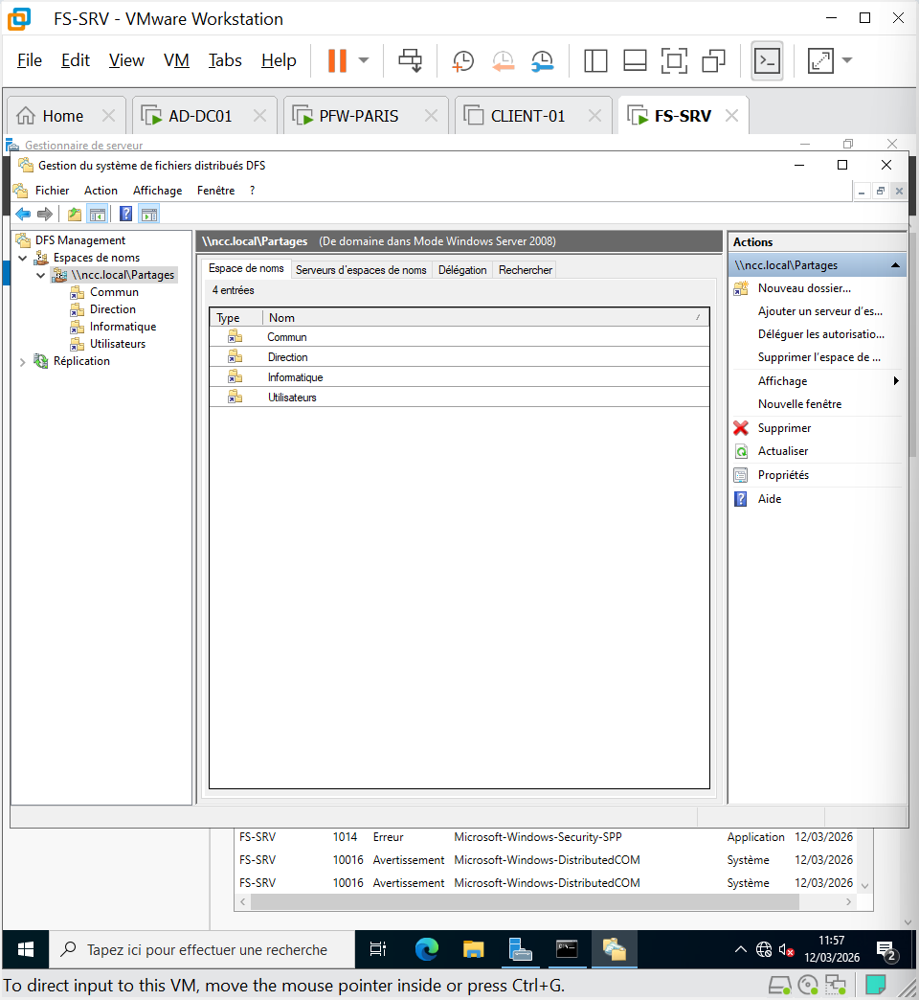
# IP statique via Netplan
sudo nano /etc/netplan/00-installer-config.yaml
network:
version: 2
ethernets:
ens33:
addresses: [10.10.20.30/24]
gateway4: 10.10.20.1
nameservers:
addresses: [10.10.10.10]
search: [ncc.local]
sudo netplan apply
# Java 17 + Tomcat 10
sudo apt install -y openjdk-17-jdk
sudo useradd -r -m -U -d /opt/tomcat -s /bin/false tomcat
# Télécharger et extraire Tomcat 10 dans /opt/tomcat
# Créer service systemd tomcat.service
sudo systemctl daemon-reload && sudo systemctl enable --now tomcat
# PostgreSQL 14
sudo apt install -y postgresql postgresql-contrib
sudo -u postgres psql -c "CREATE DATABASE erp_ncc;"
sudo -u postgres psql -c "CREATE USER erp_user WITH ENCRYPTED PASSWORD 'P@ssERP!';"
sudo -u postgres psql -c "GRANT ALL PRIVILEGES ON DATABASE erp_ncc TO erp_user;"
# UFW — TCP 8080 depuis SERVERS et DMZ uniquement
sudo ufw allow from 10.10.20.0/24 to any port 8080
sudo ufw allow from 10.10.30.0/24 to any port 8080 && sudo ufw enable# Installation Nginx
sudo apt install -y nginx
# Certificat TLS auto-signé
sudo openssl req -x509 -nodes -days 365 -newkey rsa:2048 \
-keyout /etc/ssl/private/ncc-selfsigned.key \
-out /etc/ssl/certs/ncc-selfsigned.crt \
-subj "/C=FR/ST=IDF/L=Saint-Denis/O=NCC/CN=ncc.local"
# Virtual host Nginx — /etc/nginx/sites-available/ncc
server {
listen 80;
return 301 https://$host$request_uri;
}
server {
listen 443 ssl;
ssl_certificate /etc/ssl/certs/ncc-selfsigned.crt;
ssl_certificate_key /etc/ssl/private/ncc-selfsigned.key;
location / {
proxy_pass http://10.10.20.30:8080;
proxy_set_header X-Real-IP $remote_addr;
proxy_set_header X-Forwarded-For $proxy_add_x_forwarded_for;
}
location /monitoring {
proxy_pass http://10.10.20.40/zabbix;
}
}
sudo ln -s /etc/nginx/sites-available/ncc /etc/nginx/sites-enabled/
sudo nginx -t && sudo systemctl reload nginx# Durcissement sshd_config
sudo nano /etc/ssh/sshd_config
PasswordAuthentication no
PermitRootLogin no
PubkeyAuthentication yes
MaxAuthTries 3
sudo systemctl reload ssh
# Fail2ban — ban SSH après 5 échecs en 10 min, durée 1h
sudo apt install -y fail2ban
sudo nano /etc/fail2ban/jail.local
[sshd]
enabled = true
maxretry = 5
findtime = 600
bantime = 3600
sudo systemctl enable --now fail2ban
# Validation
sudo systemctl status fail2ban
# → Active: active (running) ✓
sudo fail2ban-client status sshd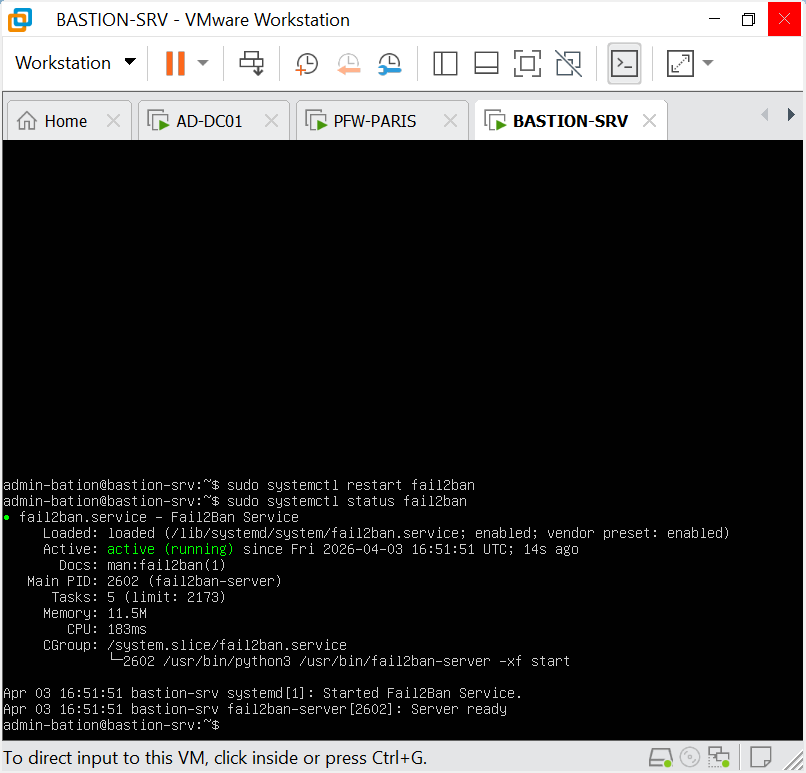
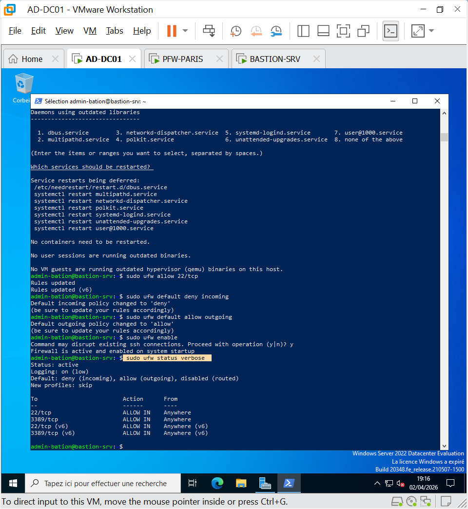
# Ajout dépôt officiel Zabbix 6.4
wget https://repo.zabbix.com/zabbix/6.4/ubuntu/pool/main/z/zabbix-release/zabbix-release_6.4-1+ubuntu22.04_all.deb
sudo dpkg -i zabbix-release_6.4-1+ubuntu22.04_all.deb && sudo apt update
# Installation
sudo apt install -y zabbix-server-mysql zabbix-frontend-php zabbix-apache-conf zabbix-sql-scripts zabbix-agent mariadb-server
# Base de données MariaDB
sudo mysql -uroot -e "CREATE DATABASE zabbix CHARACTER SET utf8mb4 COLLATE utf8mb4_bin;"
sudo mysql -uroot -e "CREATE USER 'zabbix'@'localhost' IDENTIFIED BY 'P@ssZBX!';"
sudo mysql -uroot -e "GRANT ALL PRIVILEGES ON zabbix.* TO 'zabbix'@'localhost';"
zcat /usr/share/zabbix-sql-scripts/mysql/server.sql.gz | mysql -uzabbix -p zabbix
# Démarrage Zabbix Server
sudo systemctl enable --now zabbix-server zabbix-agent apache2
# WebUI accessible : http://10.10.20.40/zabbix
# Seuils d'alerte configurés dans WebUI
CPU > 80% → WARNING
Disque < 10% → HIGH
Service down → DISASTER
# Templates : "Windows by Zabbix agent" + "Linux by Zabbix agent"# Installation agent
sudo apt install -y zabbix-agent
# Configuration /etc/zabbix/zabbix_agentd.conf
Server=10.10.20.40
ServerActive=10.10.20.40
Hostname=[NOM_DE_LA_VM]
sudo systemctl enable --now zabbix-agent
# Vérification depuis ZBX-SRV : Monitoring > Hosts > statut vert# Installation Wazuh 4.7 (Indexer + Manager + Dashboard)
curl -sO https://packages.wazuh.com/4.7/wazuh-install.sh
sudo bash wazuh-install.sh -a
# Problème 1 : JVM heap insuffisant (RAM limitée à 4 Go)
# Correction /etc/wazuh-indexer/jvm.options
-Xms512m
-Xmx512m
# Problème 2 : répertoire manquant
sudo mkdir -p /var/log/wazuh-indexer/
sudo chown -R wazuh-indexer: /var/log/wazuh-indexer/
sudo systemctl restart wazuh-indexer wazuh-manager
# Dashboard accessible : https://10.10.20.50# FIM Linux — fichiers critiques surveillés
<syscheck>
<frequency>43200</frequency>
<directories check_all="yes">/etc/passwd</directories>
<directories check_all="yes">/etc/shadow</directories>
<directories check_all="yes">/etc/sudoers</directories>
<directories check_all="yes">/etc/ssh/sshd_config</directories>
</syscheck>
# FIM Windows
<directories check_all="yes">C:\Windows\System32</directories>
# Audit connexions SSH
<localfile>
<log_format>syslog</log_format>
<location>/var/log/auth.log</location>
</localfile>
# Intégration logs Nginx (WEB-FRONT)
<localfile>
<log_format>apache</log_format>
<location>/var/log/nginx/access.log</location>
</localfile>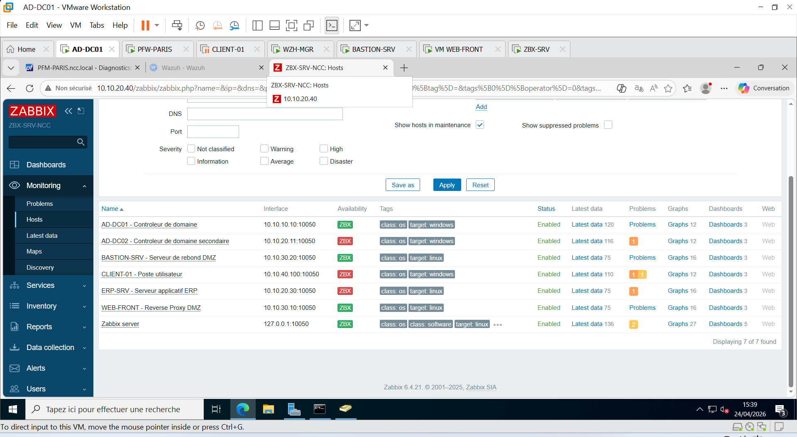
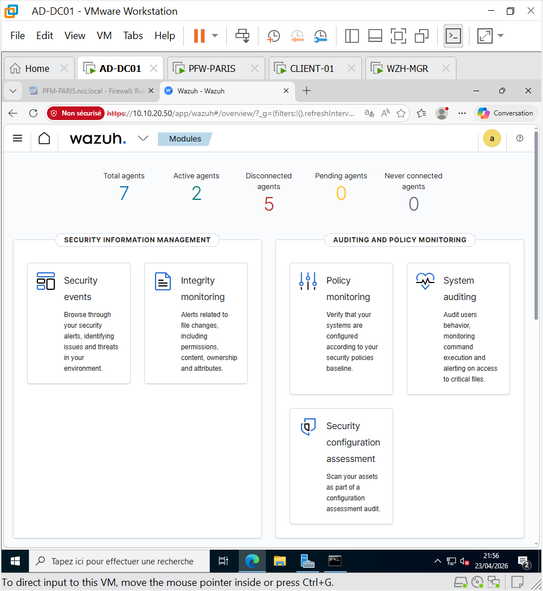
openvpn-client-export était indisponible (incompatibilité libssl.so.30). L'intégralité de la PKI et du VPN a été configurée manuellement — ce qui a abouti à une maîtrise concrète des PKI et de la cryptographie appliquée.# Autorité de Certification interne
Descriptive name : NCC-VPN-CA
Method : Create an internal Certificate Authority
Key type : RSA / Key length : 2048 bits
Digest algorithm : SHA256
Lifetime : 3650 jours (10 ans)
Common Name : NCC-VPN-CA
C=FR / ST=IDF / L=Saint-Denis / O=NCC
# Certificat serveur VPN
Name: NCC-VPN-Server | CA: NCC-VPN-CA | RSA 2048 | SHA256 | 3650j
# Certificat client VPN
Name: NCC-VPN-Client | Type: User Certificate | CA: NCC-VPN-CA# Paramètres serveur
Server Mode : Remote Access (SSL/TLS)
Protocol : UDP on IPv4 only / Interface : WAN / Port : 1194
CA : NCC-VPN-CA
Certificate : NCC-VPN-Server
Data Encryption : AES-256-GCM, AES-128-GCM, CHACHA20-POLY1305
Auth digest : SHA256
DH Parameters : 2048 bits
Tunnel Network : 10.8.0.0/24
# Réseaux accessibles par les clients VPN
Local Network : 10.10.10.0/24, 10.10.20.0/24, 10.10.30.0/24, 10.10.40.0/24
DNS Server : 10.10.10.10 # Résolution ncc.local
DNS Domain : ncc.local
# Règle pfSense WAN — UDP/1194
Firewall > Rules > WAN : ALLOW UDP 1194 → pfSense
# Interface ovpns1
Interfaces > Assignments > ovpns1 : activer et nommer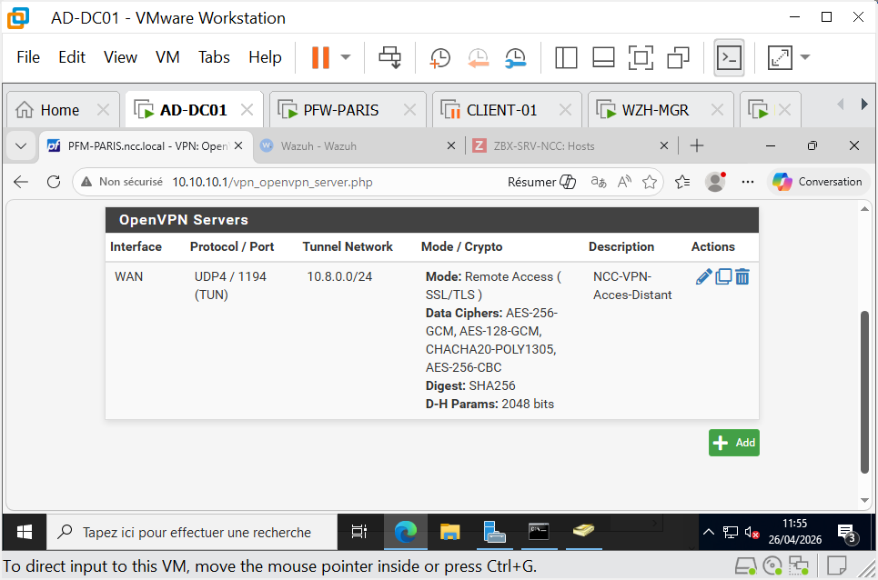
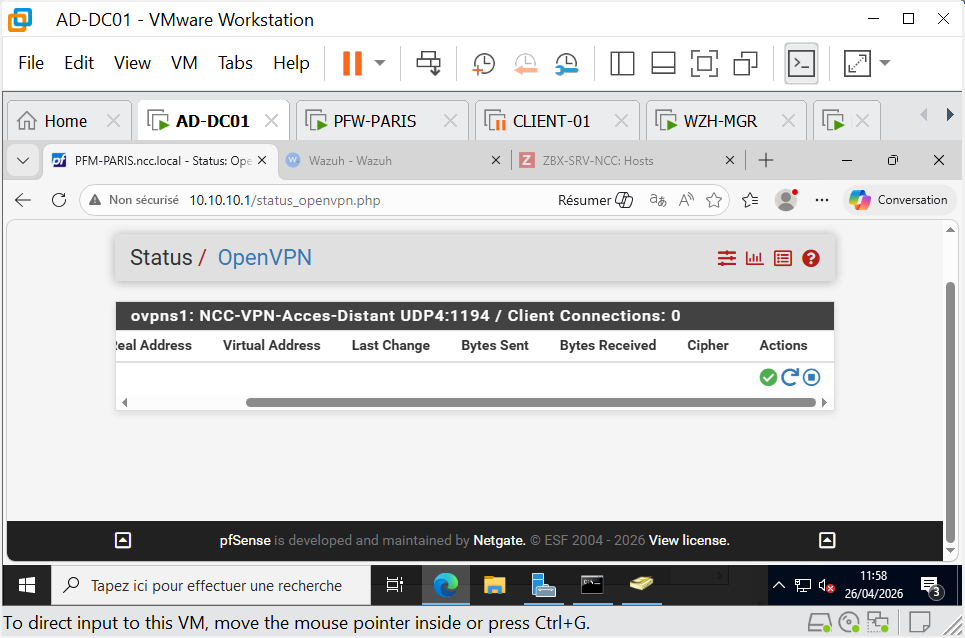
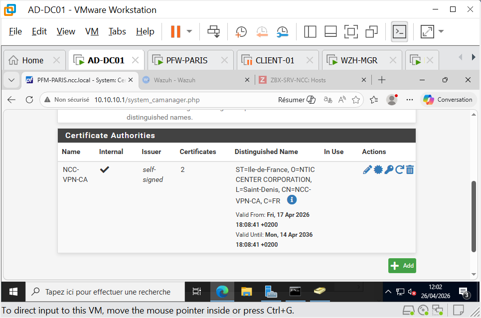
Aucun plan de sauvegarde n'existait. J'ai mis en place la politique 3-2-1 : 3 copies des données, sur 2 supports différents, dont 1 hors site (Azure Blob Storage, prévu Mission 2).
| Serveur | Type sauvegarde | Fréquence | Heure | Rétention |
|---|---|---|---|---|
| AD-DC01 | Système complet + AD | Incrémentielle quotidienne | 02h00 | 30 jours |
| AD-DC02 | Système complet + AD | Incrémentielle quotidienne | 02h00 | 30 jours |
| FS-SRV | Données DFS / Partages | Complète hebdomadaire | Dim 03h00 | 30 jours |
| ERP-SRV | BDD PostgreSQL + config | Incrémentielle quotidienne | 02h30 | 30 jours |
| WZH-MGR | Logs SIEM + config | Incrémentielle quotidienne | 03h30 | 30 jours |
| Activité | KPI / Résultat mesuré | Statut |
|---|---|---|
| pfSense + 5 VLANs | 5 VLANs actifs, règles ANSSI appliquées, 0 incident | ✓ |
| Active Directory HA | 15 comptes, 8 groupes, 4 OUs, dcdiag replications passed | ✓ |
| ERP-SRV Tomcat/PostgreSQL | Tomcat 10 UP, PostgreSQL 14 UP, application accessible | ✓ |
| WEB-FRONT Nginx + TLS | TLS actif, reverse proxy fonctionnel, logs Nginx dans Wazuh | ✓ |
| BASTION-SRV | Fail2ban actif, SSH journalisé, agent Wazuh actif | ✓ |
| Supervision Zabbix + Wazuh | 7/7 agents Zabbix, 7/7 Wazuh, FIM actif, MTTD < 5 min | ✓ |
| VPN OpenVPN PKI | AES-256-GCM actif, PKI NCC-VPN-CA, accès distant validé | ✓ |
| Sauvegarde NAS 3-2-1 | RTO mesuré 38 min, tests restauration AD-DC01 + FS-SRV validés | ✓ |
| CLIENT-01 | GPO appliquées, lecteurs Z:/S: mappés, Kerberos validé | ✓ |
| Documentation DAT/DEX/DSR | DAT v1.0 + DEX + DSR + Plan IP livrés sur DFS \\ncc.local\Partages\Informatique | ✓ |
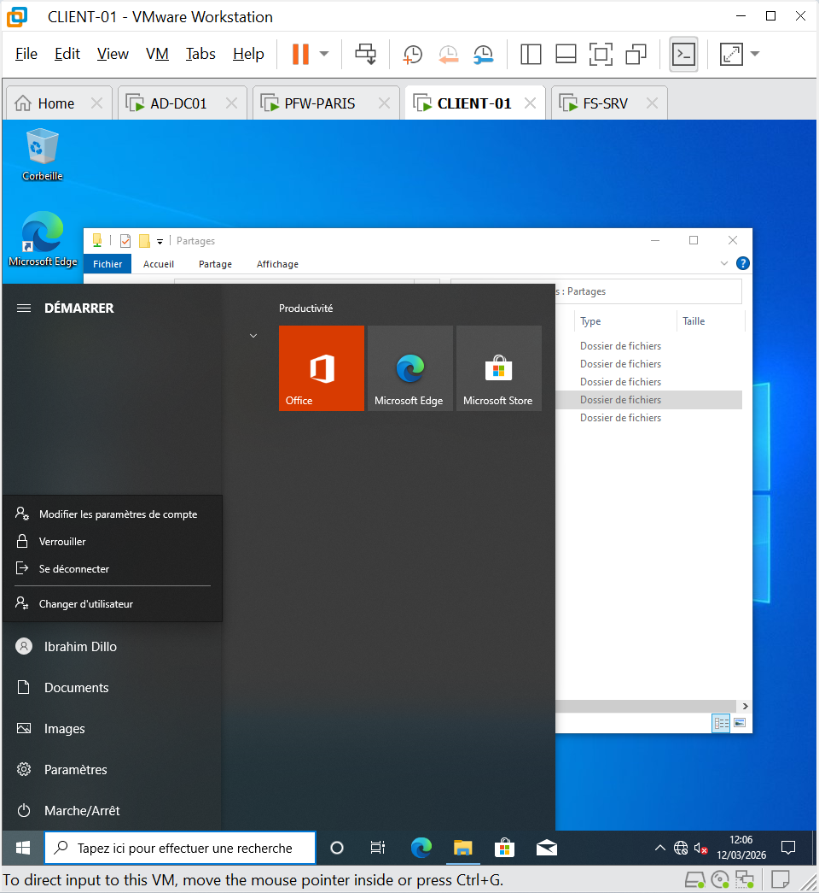
| Constat | Risque associé | Criticité | Plan Mission 2 |
|---|---|---|---|
| Hôte VMware unique (SPOF) | Panne matérielle = arrêt total SI | HAUTE | Migration ESXi 8 + vCenter 8 (vMotion, DRS, HA) |
| Absence ticketing GLPI | Incidents non tracés, KPIs indisponibles | MOYENNE | Déploiement GLPI + CMDB |
| RPO 24h | Perte données jusqu'à 24h | MOYENNE | Azure Blob Storage — RPO cible 15 min |
| MFA non implémenté | Authentification mot de passe uniquement | MOYENNE | Azure MFA ou TOTP |
| openvpn-client-export indisponible | Déploiement client VPN manuel complexe | FAIBLE | Upgrade pfSense ou script .ovpn automatisé |
| Objectif | Description | Priorité |
|---|---|---|
| Site Abidjan + VPN IPSec site-à-site | Infrastructure secondaire + VPN IPSec (AES-256/SHA-256/DH14) | HAUTE |
| Migration ESXi 8 + vCenter 8 | Virtualisation production — suppression SPOF physique | HAUTE |
| Déploiement GLPI + CMDB | Gestion des tickets, inventaire automatique | MOYENNE |
| Sauvegarde cloud Azure | Règle 3-2-1 complète avec 1 copie hors site | MOYENNE |
| MFA & sécurité avancée | Azure MFA / TOTP, EDR, PAM | MOYENNE |
Découvrir d'autres projets